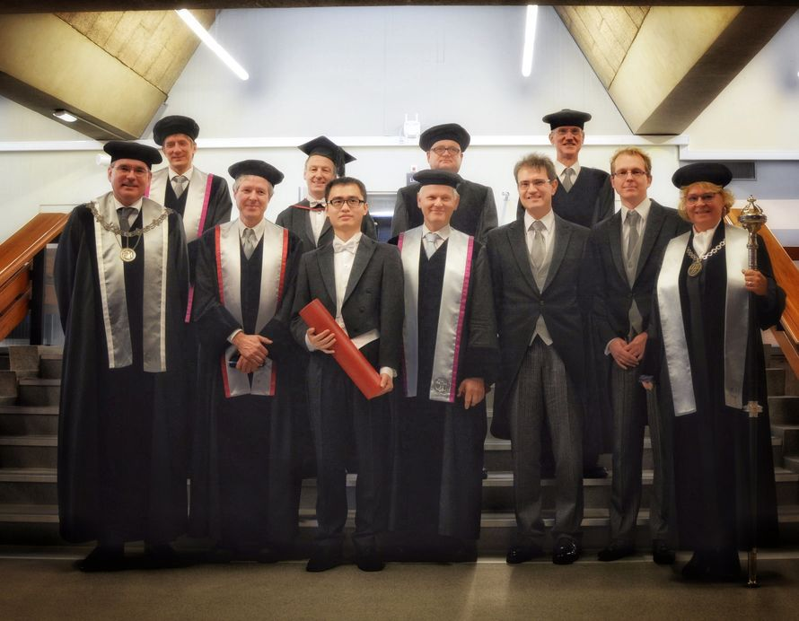

Listed in reverse chronological order
- Invited talk at Numerical Linear Algebra and Scientific Computing Conference, hosted by School of Mathematical Sciences, Tongji University, Jun. 14, 2020. Shanghai, China.
2020
- Seminar talk at School of Mathematical Sciences, Tongji University, Nov. 27, 2019. Shanghai, China.
- Invited talk at the Workshop on Machine Learning and Data-driven Methods for Model Reduction and Control, Oct. 14 -- 18, 2019. Shanghai University, Shanghai, China.
- Invited talk at the European Conference on Numerical Mathematics and Advanced Applicuations (ENUMATH), Sep. 30 -- Oct. 4, 2019. Egmond aan Zee, the Netherlands.
- Invited talk at the XV International Conference on Stochastic Programming (ICSP2019), Jul. 29 -- Aug. 2, 2019. Trondheim, Norway.
- Seminar talk at the youth forum of School of Mathematical Sciences, Tongji University, Apr. 27, 2019. Shanghai, China.
- Seminar talk at the youth forum of School of Mathematical Sciences, University of Science and Technology of China, Apr. 20, 2019. Hefei, China.
- Seminar talk at School of Economic Mathematics, Southwestern University of Finance and Economics of China, Apr. 11, 2019. Chengdu, China.
- Seminar talk at the youth forum of School of Mathematical Sciences, University of Electronic Science and Technology of China, Apr. 10, 2019. Chengdu, China.
- Mini-symposium organization on "Mathematical Methods for Control and Optimization of Large-Scale Energy Networks" at SIAM Conference on Computational Science and Engineering (CSE 19), Feb. 25 -- Mar. 1, 2019. Spokane, Washington, USA. Check here for [Session 1] and [Session 2].
2019
2018
- Invited talk at SIAM Conference on Uncertainty Quantification (UQ18), April 16-19, 2018. Garden Grove, California, USA.
2017
- Invited talk at International Conference On Preconditioning Techniques For Scientific And Industrial Applications, July 31- August 2, 2017. Vancouver, Canada.
2016
- Mathematics of Gas Transport, October 6-7, 2016. Berlin, Germany.
- Invited talk at Chinese-German Workshop "Modelling, Model Reduction, and Optimization of Flows, September 25-29, 2016. Shanghai, China.
- Contributed talk at 4th European Conference on Computational Optimization, September 12-14, 2016. Leuven, Belgium.
- Joint DMV and GAMM Annual Meeting, March 7-11, 2016. Braunschweig, Germany.
2015
- PhD defense at Aula Auditorium, Delft University of Technology, December 07, 2015, the Netherlands. 
- GERARD 65: Symposium on Gerard Sleijpen's 65th birthday, November 12, 2015. Utrecht, the Netherlands.
- Fortieth Numerical Analysis Conference Woudschoten Past, Present and Future of Scientific Computing, October 7-9, 2015. Zeist, the Netherlands.
- Contributed talk at European Conference on Numerical Mathematics and Advanced Applications (ENUMATH 2015), September 14-18, 2015. Ankara, Turkey.
- Contributed talk at GAMM Workshop on Applied and Numerical Linear Algebra, July 9-10, 2015. Magdeburg, Germany.
- Contributed talk at International Conference on Preconditioning Techniques for Scientific and Industrial Applications, June 17-19, 2015. Eindhoven, the Netherlands.
- PhDays 2015. May 8-10, 2015. Ardennes, Belgium.
- Student Krylov Day 2015, February 2, 2015. Delft, the Netherlands.
| Composition | |
|---|---|
| Front from left to right | Prof. dr. Gabriel Lodewijks, University of New South Wales, Sydney, Australia. (chairman) |
| Prof. dr. Michel Verhaegen, Delft University of Technology, Delft, the Netherlands. (promotor) | |
| Prof. dr. Cornelis Vuik, Delft University of Technology, Delft, the Netherlands. (promotor) | |
| Prof. dr. Martin van Gijzen, Delft University of Technology, Delft, the Netherlands. (copromotor) | |
| Prof. dr. Jan-Willem van Wingerden, Delft University of Technology, Delft, the Netherlands. (copromotor) | |
| Beadle, Delft University of Technology, Delft, the Netherlands. | |
| Back from left to right | Prof. dr. Alle-Jan van der Veen, Delft University of Technology, Delft, the Netherlands. |
| Prof. dr. Andy Wathen, University of Oxford, Oxford, UK. | |
| Prof. dr. Peter Benner, Max Planck Institute for Dynamics of Complex Technical Systems, Germany. | |
| Prof. dr. Barry Koren, Eindhoven University of Technology, Eindhoven, the Netherlands. |
2014
- Contributed talk at Structured Numerical Linear and Multilinear Algebra: Analysis, Algorithms and Applications (SLA 2014), September 8-12, 2014. Kalamata, Greece.
- Contributed talk at 13th European Control Conference (ECC 2014), June 27-30, 2014. Strassburg, France.
- PhDays 2014. May 16-18, 2014. Beauvoorde, Belgium.
- Het 50ste Nederlands Mathematisch Congres (NMC 2014), April 16-17, 2014. Delft, the Netherlands.
- Winter School on Hierarchical Matrices. Max-Planck-Institute for Mathematics in the Sciences, Febuary 24-27, 2014. Leipzig, Germany.
2013
- Contributed talk at 11th International Conference on Numerical Analysis and Applied Mathematics (ICNAAM 2013), September 21-27, 2013. Rhodos, Greece.
- Poster presentation at Recent Advances on Optimization, July 24-26, 2013. Toulouse, France.
2012
- Poster presentation at 8th PhD Seminar on Wind Energy in Europe, September 12-13, 2012. ETH Zurich, Switzerland.
- Dutch Institute of Systems and Control (DISC) Summer School on Optimization in Control Theory. June 11-14, 2012. Noordwijk, the Netherlands.
- Poster presentation at Symposium on Numerical Linear Algebra - Algorithms, Applications, and Training, April 10-13, 2012. Delft, the Netherlands.
- Contributed talk at 31st Benelux Meeting on Systems and Control, March 27-29, 2012. Heijderbos, the Netherlands.
- Student travel award for European Embedded Control Institute (EECI) Graduate School on Decentralized and Distributed Control. Supélec, Febuary 20-24, 2012. Gif-sur-Yvette Cedex, France.
2011
- 7th PhD Seminar on Wind Energy in Europe, October 27-28, 2011. Delft, the Netherlands.